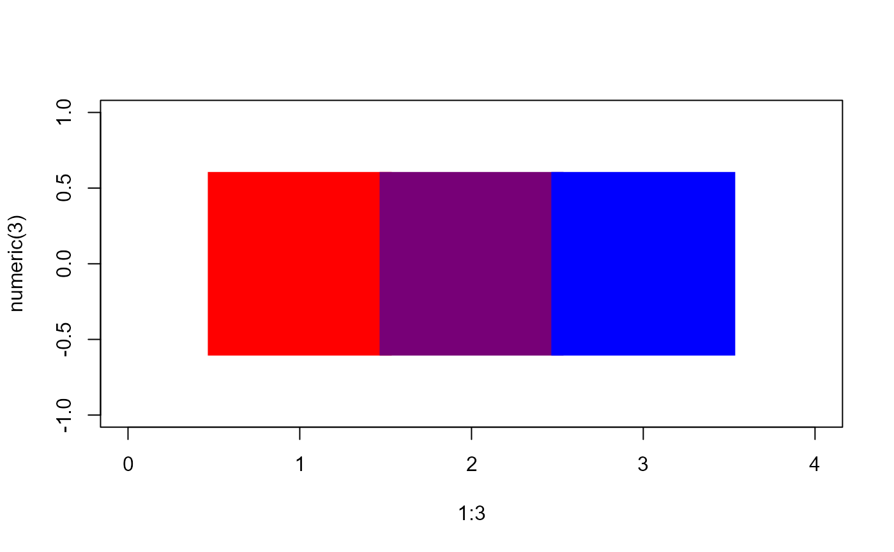
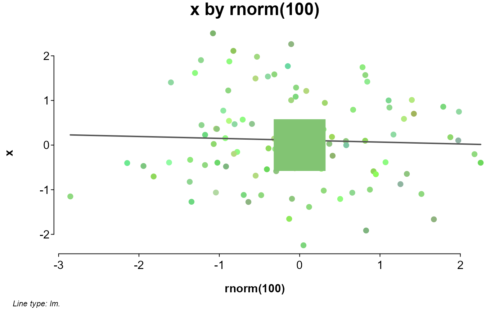

Calculates the average of a set of colors, returning its Hex code.
Examples
# average of red and blue
plot(
1:3, numeric(3),
pch = 15, cex = 20, xlim = c(0, 4),
col = c("red", splot.colormean("red", "blue"), "blue")
)

# average of a set
x <- rnorm(100)
set <- splot.color(x, method = "related")
splot(
x ~ rnorm(100),
colors = set,
add = points(0, 0, pch = 15, cex = 10, col = splot.colormean(set))
)
